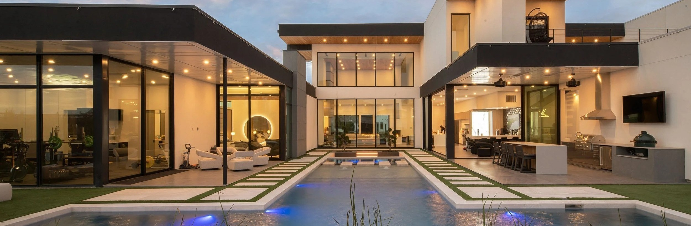
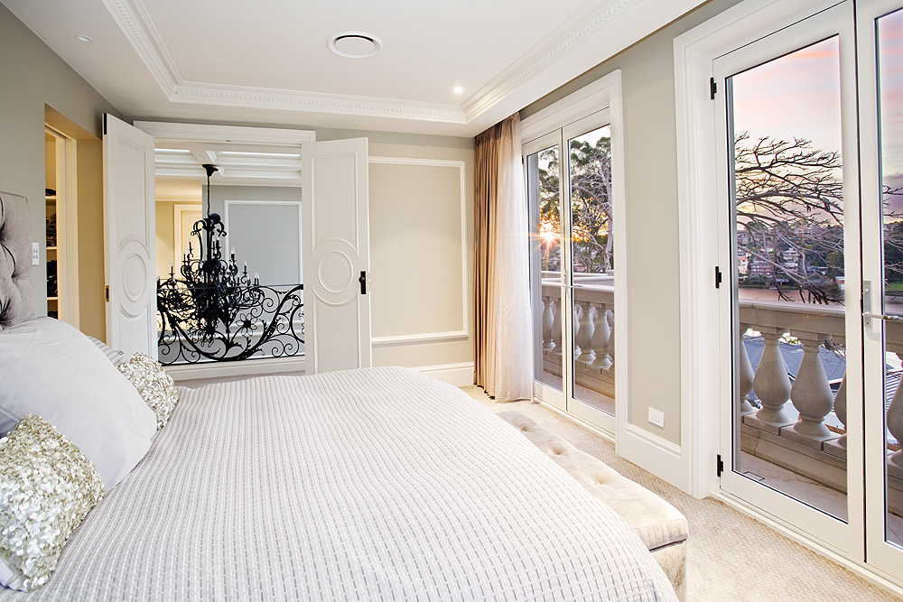
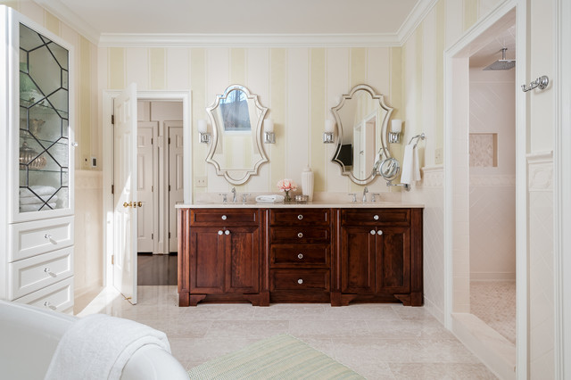

Welcome to Ternak Home Improvements Inc.
Located in the heart of Toronto, here at Ternak we do everything from basements to roofs. We are fully licensed and insured. We have been in business for over 45 years building up a strong reputation. We have highly qualified workers who provide the best services. We have experience in working on older homes in the city. From Basement to Roof We Do it All! Full or partial renovations.
What Our Clients Say
"I needed to gut my 2nd floor bathroom, and basement. I called Ternak because they had done a good job on my roof and deck. I wasn’t disappointed. The end result for both was excellent. All throughout, Dale, the project manager, kept in touch with me and helped me through unexpected challenges, which were many in a 105 year old house. Sandro and Michael, the main contractors, were diligent, hardworking, and extremely skilled tradesmen with an eye for design. Very friendly, and thorough. I plan to use Ternak again for all remaining work on my house in the future."
- Louise
"They did a great job fixing my woodpecker-damaged stucco, repairing the porch stone work, and building and installing railings to match my existing ones. They finished on time and within budget, and exceeded expectations when it came to the railing design."
- Bob Builder
"I had a leaky porch, cracked concrete over a basement room.. the best solution was proposed which I latter researched as the better way to solve my problem. the quote was competitive. I had flagstone laid and stairs redone.. once started they came everyday and were focused on the job. the workmanship is great. the materials sourced for the job were top grade, no cheaping out on materials, the concrete work is good, I'm very happy with the result, I would not hesitate to use them again, I'm fully satisfied. I'm a hands on person and know good work and what attention to detail is"
- Donald G
"Ternak Home Improvements has completed many interior and exterior projects to my specifications and satisfaction. Roofing, tuck pointing, brick patio, driveway and retaining wall, concrete work (internal and exterior), patio door installation, restoration of a 100+ year old garage, updating of electrical and plumbing systems, complete bathroom upgrade, drywalling, painting and flooring. Workers are professional, integrate well with other trades when necessary. Dale involves me with all aspects of a project and communicates regularly on progress. I would not hesitate to refer Ternak and contract them in the future."
- Elizabeth B
"Ternak Home Improvements re-laid our brick walkway and installed a new patio. They completed the project exactly when they said they would and the work is excellent. We would certainly recommend their services."
- Terry F
"Two thumbs up in my dealings with Ternak Home Improvement (Dale and Tony – both courteous and professional). Excellent workmanship by Gus, Walter and Mario in building a wooden fence (disposing of the old one) and re-doing the exterior of a decades old garage that had became an eyesore. The work was done promptly with attention paid to details. My wife and I are very pleased with the results. I do not hesitate in recommending Ternak."
- John M
design plan build


Ready to Transform Your Home?
Contact us today for a free, no-obligation estimate and let’s bring your vision to life!
Get a Free Estimate